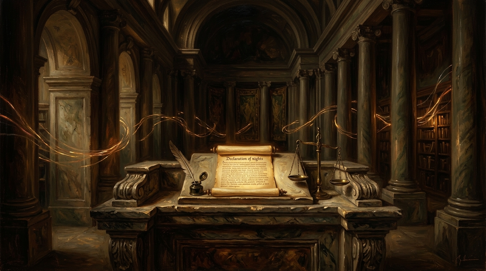

Should There Be Limits on Free Speech?
Constitutional Rights, Platform Censorship, Outrage Culture, and the Essential Balance of Article 10

“Without reasonable and lawful checks and balances incorporated into legislation or the individual’s personal responsibility for being accountable for what they say, free speech can quickly become a free for all... the freedom of one is the freedom of all.” — Trevor Swistchew
The Jurisprudential Free Speech Matrix
Comparative Constitutional Law, Platform Governance & Article 10 AuditsFirst Amendment Absolute Ideal vs. Article 10 Qualified Rights
Introduction
When Donald J. Trump, the president of the USA, was banned on social media by Twitter, Facebook and WhatsApp, many of his Republican supporters argued and complained that he was being denied his right to free speech. They cited the legislation passed by Congress guaranteeing all Americans the right of free expression and said that the ban constituted the suppression of an individual’s right to express their views in public or on a public forum. [1]
Donald Trump had been contacted many times by Twitter and Facebook prior to having his accounts suspended. His reference to “Sleepy Joe” (President Joe Biden) “stealing the election” was shown to be totally unfounded by the fact that Congress had previously verified the security of the election and made this public. [2]
Hate speech is now monitored actively by Twitter, Facebook and WhatsApp. Reported offenders can have their access to these forms of social media restricted for a period of time, or permanently, if the network providers deem what is posted is willfully racist, constitutes a threat to a protected characteristic such as colour, race, nationality, gender or sexual orientation. In very serious instances of a direct threat to injure or maim, police are informed by the networks.
Rowan Atkinson in his talk on free speech which was broadcast on YouTube refers to a show he did for the “Not the Nine o’Clock News” comedy series in which he shows how speech can be exaggerated to be viewed and construed as insult. He asserts that can, and has, led to an overly authoritarian attitude in society toward freedom of expression. He further cites Salman Rushdie, the author, who coined the phrase “outrage culture” which simply means that people could find themselves in court if anything they say is seen or interpreted as offensive by any other person. This example would seem to illustrate just how sensitive people have become in the last few decades. [3]
John Gray, on the BBC in his “Whose Free Speech?” programme, says that “turning off Trump” has already alienated many people in America from the American political system, citing that the ban is an attack on everyone in America’s freedom of speech. He explored many of the repercussions that the ban has already had and warns that further censorship might well lead to a very dangerous situation. Already many of Donald Trump’s supporters have retreated into what is known as “The Dark Web”—the part of the worldwide Internet which is only accessible through Private Networks and Software and not available for common use, (according to Gray) and that many of their activities have now gone underground. Not a good thing at all. (John Gray, 'Whose Free Speech?' BBC R4). [4]
When Barack Obama was President of the USA he said in relation to free speech, “Laudable efforts to suppress free speech can lead to a more oppressive world”. In so saying these words, the president was referring to countries in the world where free speech is either limited or non-existent, not only in the spoken word but also in other forms of communication, such as the Press, public broadcasting and news output which are heavily monitored and censored in China. The right of everyone to free speech is right and proper and any moves that are introduced to curtail or limit that freedom or influence it in a particular direction must be carefully examined. On the other hand, along with the freedom of free expression surely comes individual and collective responsibility as well as the willingness of individuals and groups of people, including politicians and world leaders to take ownership of what they say in any public domain. Without reasonable and lawful checks and balances incorporated into legislation or the individual’s personal responsibility for being accountable for what they say, free speech can quickly become a free for all.
It can be argued that free speech must never be interfered with, that everyone has the right to express their views, opinions or beliefs, yet where such expression involves inciting other people to hatred or open revolution or prejudice which could lead to serious upheaval or even death for other individuals or targeted groups of people then the absolute right to say whatever one likes gets blurry. Ideally, people should have passion, belief, and aims and the freedom to express those, but these must be balanced and logical so as not to incite hatred or violence towards other people, cultures or faiths which can lead to outrages.
There are too many examples of assaults and atrocities that can be traced back to extreme ideas being articulated by people who appear to want to see outrage and suffering in the world. One only has to think about the young people from the UK who were “radicalised” by Islamic ISIS extremists online and elsewhere and then went on to Afghanistan and Syria for “terrorist training” and who subsequently caused the deaths of innocent people in outrages that were reported around the world by PBS, BBC, Al Jazeera and other major networks.
That there are questions about how to manage or protect “free speech” is entirely understandable when such atrocities have taken place, but the question then comes about how to balance free speech with the duty of protecting people from the hate that can arise from extremist views being freely expressed.
Conclusion
In summing up the points I have listed and elucidated in this essay, I am conscious of the fact that as human beings all of us have our own individual views, opinions and beliefs stemming from the country and culture in which we live and are conditioned by.
It is our natural habit to try to uphold the values we have been taught and, indeed, this is very necessary for the peaceful co-existence of our country, our world and ourselves. It is of great importance that we also recognise that while our right of freedoms in speech and the expression of our views, opinions and beliefs are protected in law by Article 10 of the Human Rights Act 1998, we all have a duty to behave responsibly and to respect other people’s rights. These are logical and reasonable caveats and it is surely in all our best interests to observe and try to live by them. [5] It has often been said that the freedom of one is the freedom of all, therefore this has to lead to all of us working towards establishing a more open, fair and non-threatening society.